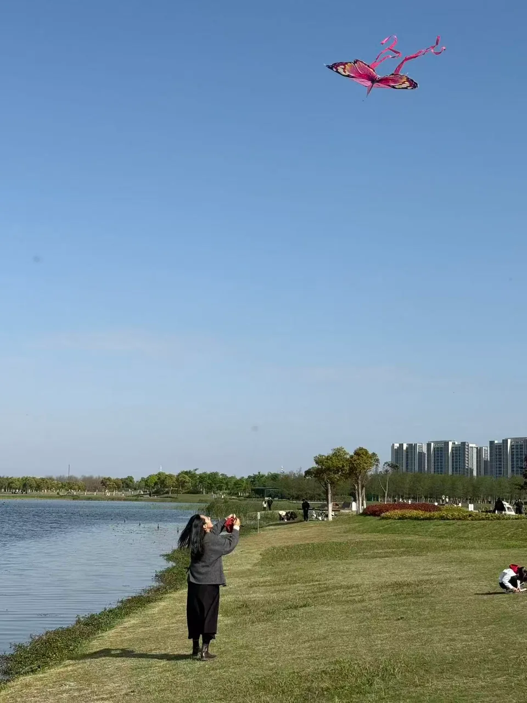

Journal of Applied Ecology journal homepage (opens in a new tab) 63(9), e70572
Ignoring death after spawning misrepresents the population dynamics of marine semelparous species (opens in a new tab)
Lab research

Hi, I’m
2026 Master’s Graduate
I study stock assessment of short-lived species, comparing surplus production models for assessing jumbo squid under climate change.
Research interests

Alumni
2026 Master’s Graduate
I’m Rutong Tang, a Master’s graduate from the class of 2026. I study stock assessment of short-lived species, comparing surplus production models for assessing jumbo squid under climate change.
唐茹彤，2026届研究生。研究方向为短生命周期物种资源评估，主要研究课题为剩余产量模型在气候变化下对茎柔鱼资源评估对比。
Journal of Applied Ecology journal homepage (opens in a new tab) 63(9), e70572
Lab research
广东海洋大学学报 journal homepage (opens in a new tab) 46(3), 175–182
Lab research